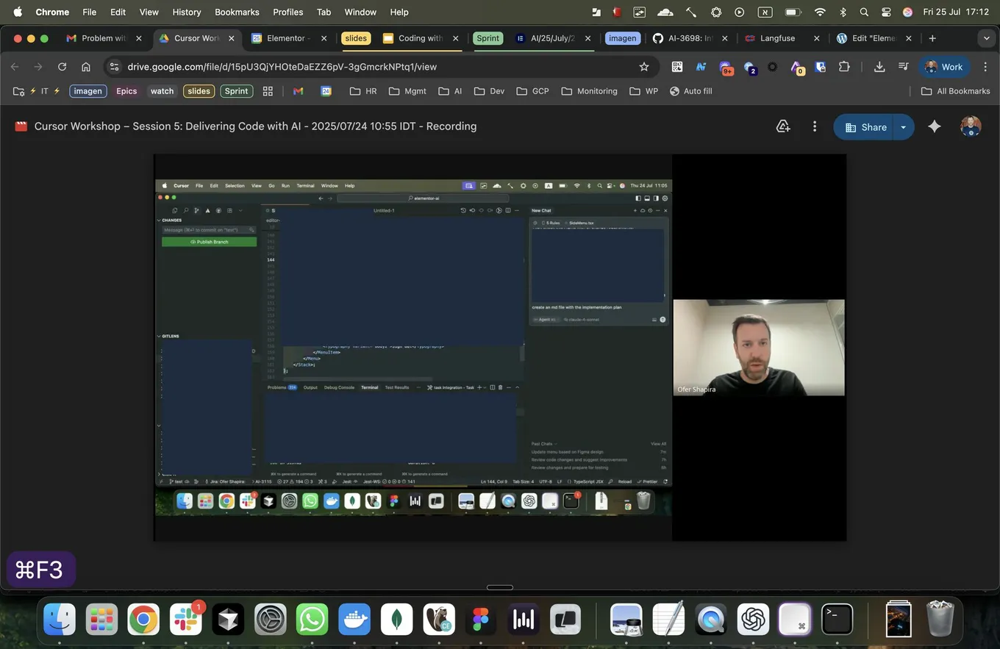

Teaching Cursor across the full development cycle
Originally posted on LinkedIn, July 27, 2025.
We completed a 5-session Cursor workshop for the entire R&D team. The goal was to introduce Cursor as a working tool used throughout the development cycle.
We covered every stage of the process, from planning and specification through coding and testing to code review and delivery. In each session, participants applied Cursor to their actual work, including the processes, tactics, and tasks related to that session.
The focus was not only on what the tool can do, but on practice: using it to speed up development, understand its capabilities, reduce coding errors, and make better decisions. More than anything, we wanted to show that Cursor is powerful, changes how we work, and is accessible enough for every developer to start using.
We also addressed the new challenges it creates. Developers need to learn how to balance letting Cursor write code, which happens at an almost unimaginable speed, with continuing to inspect that code and tell it what to fix and how to work. That part remains slow and difficult, and still requires developers.
We have entered a new era. As the people who hold the full context, our role is shifting from manually writing code to directing, planning, and reviewing it. Developers need to experience, practice, and absorb this shift to complete the transition from developer to Context Engineer.
A workshop like this is ultimately less about what Cursor can do and more about what it takes to adopt an LLM-based development tool as part of technological progress and the AI shift, rather than treating it as another technical add-on. Staying relevant requires going through this process. It cannot be skipped.
